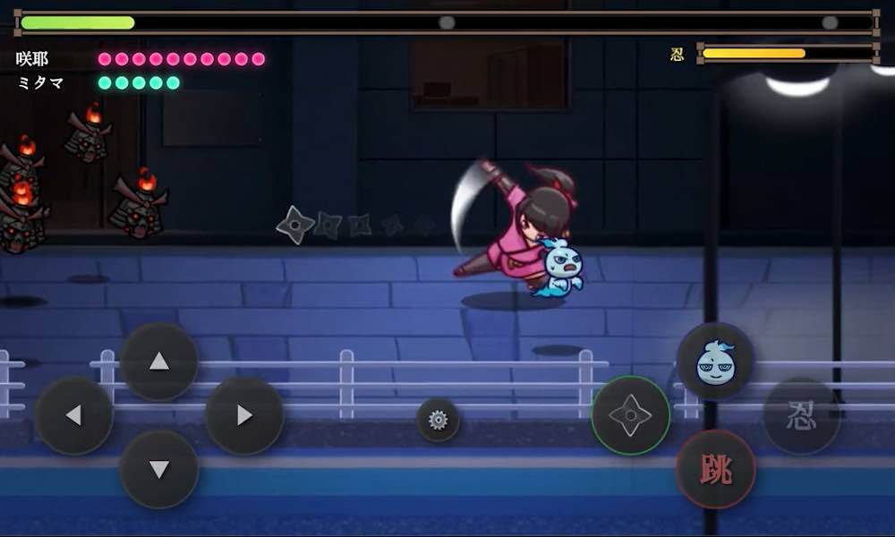

AIの知能に、アニメ監督の命を
子供の「こんなのあったら」から始まった冒険
きっかけは、私の子どもが考えたキャラクターに命を吹き込みたいという遊び心から。私のゲーム制作はそこから始まりました。
動きはプロが使用するAdobeのアプリケーションで、言葉は最新AIで。アニメーション監督としての技術と最新のAI開発を掛け合わせ、今までにない「手触り」の学習体験を追求しています。
Animator's Craft
×
Vibe Coding（AIコーディング）
×
Vibe Coding（AIコーディング）

ゲームデザイン技術
学習ゲームシリーズ「NOA Games」の開発者である野中晶史は、純粋なエンターテインメント性を追求した本格派ブラウザゲームの開発も手がけています。
代表作のサバイバルアクションゲーム『RunGunGuard』では、テレビアニメ「忍ばない！クリプトニンジャ咲耶」をテーマにしたゲームであり、大人がやり込むレベルのゲームを作れる技術があるからこそ、教育ゲームにおいても子供たちが夢中になるハイクオリティな手触りを実現しています。